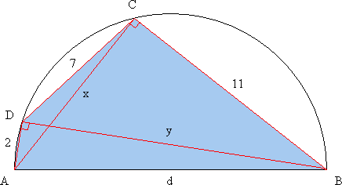
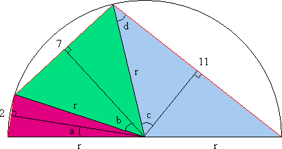
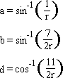
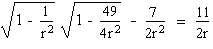

Solution to puzzle 63: Cyclic hexagon
A hexagon with consecutive sides of lengths 2, 2, 7, 7, 11, and 11 is inscribed in a circle. Find the radius of the circle.
Each inscribed side of the hexagon subtends an angle at the center of the circle which is independent of its position in the circle. The sides are subject to the constraint that the sum of the angles subtended at the center equals 2.
Hence we may permute the sides of the hexagon, from {2, 2, 7, 7, 11, 11} to {2, 7, 11, 2, 7, 11}.
Since the two sets of sides, {2, 7, 11}, are congruent, each can be inscribed in a semicircle of the same radius as the original circle.
Geometric Solution
Consider cyclic quadrilateral ABCD, where AB = d is the diameter of the semicircle, BC = 11, CD = 7, and DA = 2. Let diagonals AC = x and BD = y.
Since the angle in a semicircle is a right angle, angles ADB and ACB are right angles.
Ptolemy's Theorem states that in a cyclic quadrilateral the sum of the products of the two pairs of opposite sides equals the product of its two diagonals.
Hence 7d + 22 = xy.
By Pythagoras' Theorem,
x2 = d2 - 121, and
y2 = d2 - 4
Hence (7d + 22)2 = (d2 - 121)(d2 - 4).
Expanding, we get 49d2 + 308d + 484 = d4 - 125d2 + 484.
Dividing by d (since d 0) and simplifying, we obtain d3 - 174d - 308 = 0.
By the Rational Zero Theorem, a rational root of this equation must be an integer, and a factor of 308.
If we suppose the equation has an integer root, this helps us to obtain the factorization: (d - 14)(d2 + 14d + 22) = 0.
The quadratic factor has negative real roots. Hence d = 14 is the only positive real root.
Therefore the radius of the circumscribing circle of the original hexagon is 7 units.
Trigonometric Solution
We can drop a perpendicular from the center of the circle to each of the chords, bisecting the isosceles triangles, as shown.
We have a + b + c = /2, and c + d = /2.
Hence a + b = d < /2.
We also have
Taking the cosine of both sides of a + b = d, and using trigonometric identities cos(x + y) = cosx cosy - sinx siny, and sin2x + cos2x = 1, we get
Adding 7/2r2 to both sides of the equation, squaring, and multiplying by 2r3, we obtain
2r3 - 87r - 77 = 0
This easily factorizes, giving (r - 7)(2r2 + 14r + 11) = 0.
The quadratic factor has negative real roots. Hence r = 7 is the only positive real root.
Therefore the radius of the circumscribing circle of the original hexagon is 7 units.
Remarks
The geometric solution, above, is easily generalized to find the diameter of a semicircle in which chords of length a, b, c are inscribed.
The diameter is a positive real root of d3 - (a2 + b2 + c2)d - 2abc = 0.
By Descartes' Sign Rule, this cubic equation has exactly one positive real root.
It can be shown that the roots of x3 + ax2 + bx + c = 0 are all real if and only if a2b2 - 4a3c + 18abc - 4b3 - 27c3 is non-negative. This condition holds for the above equation. When all three roots of a cubic equation are real, the formula for the roots expresses them as sums of cube roots of complex numbers. If you attempt to extract the cube roots of these complex numbers, you'll find you have to solve precisely the cubic equation you started with! This is the so-called Casus Irreducibilis; see reference 6, below. It can be shown that the roots of such a cubic equation cannot in general be expressed in terms of real radicals.
Further reading
- Cyclic Hexagon
- [Java] Tucker Circles
- Ptolemy's Theorem and Interpolation
- Geometry Tutorial: Ptolemy's Inequality
- Cubic Equation
- The Geometry of the Cubic Formula
- How to discover for yourself the solution of the cubic
Source: Inspired by message 309 in the Geometry Yahoo! Group